|
|
| sea stars text index | photo index |
| Phylum Echinodermata > Class Stelleroida > Subclass Asteroidea |
| Spiny
sea star Gymnanthenea laevis Family Oreasteridae updated Mar 2020 Where seen? This sea star is sometimes seen, usually on our Northern shores. In seagrass meadows and coral rubble. Features: Diameter with arms 7-15cm. Usually five arms long with rounded tips. The body is bordered by large, block-like scalloped plates with huge pedicellaria (pincer-like structures), with many spiny bumps along the arms. On the upper side, there are many spiny bumps, sometimes with very lage flat plate-like spines. Colours seen generally mottled brown or grey, sometimes with orange arm tips. Bright orange ones are sometimes seen. The underside is pale usually without any patterns. Each plate on the underside has huge bivalved pedicellaria (pincer-like structures). The pale tube feet are tipped with suckers. Sometimes confused with the Biscuit sea star (Goniodiscaster scaber) and the Cake sea star (Anthenea aspera). Here's more on how to tell apart large sea stars on our shores. |
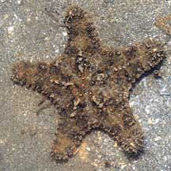 Chek Jawa, Oct 08 |
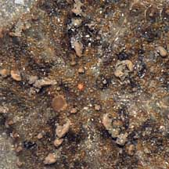 Large plate-like spines on upperside. |
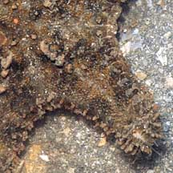 Large block-like plates on sides of the arms. Spines on the tips of the arms. |
|
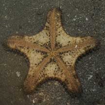 Underside may be plain or spotted. |
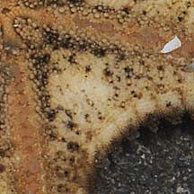 Large bivalved pedicelleria on the underside. |
| Spiny sea stars on Singapore shores |
On wildsingapore
flickr
|
| Other sightings on Singapore shores |
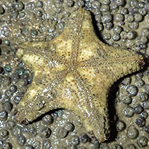 |
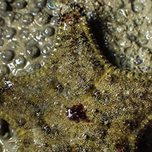 |
|
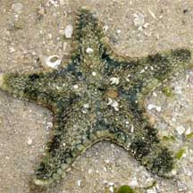 Cyrene Reef, May 08 |
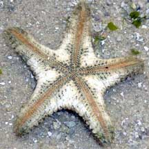 |
|
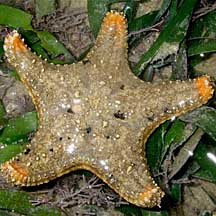 Cyrene Reef, Jul 10 |
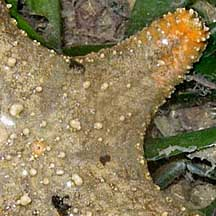 |
Links
References
|